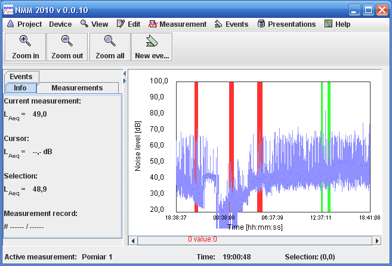

Interfejs programu został przedstawiony na poniższym rysunku. Kolejnymi liczbami oznaczone zostały jego poszczególne komponenty, a poniżej zamieszczono wyjasnienia.
Pasek tytułowy okna-typowy pasek tytułowy
Pasek menu głownego-typowy pasek menu
Pasek narzędiowy-typowy pasek narzędziowy
\Panel informacyjny-panel składa się z zakłdek, na których prezentowane są różne rodzaje informacji dotyczacych pomiarów w projekcie, oraz innych elementów projektu.
Pasek stanu-typowy pasek stanu
Okno wykresu-typowe okno wykresu/p>